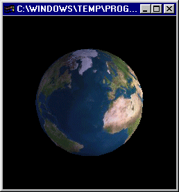

urce source source source source source source source source source source |
[program
three]
Our first venture into texture mapping is made easy. We 'cheat' by
loading an image in .raw format and using the glu sphere's automatic texture
coordinate generation feature. The exercise is still useful though - as
many concepts explored here will be expanded upon in later programs.
The program is copied from the previous example, only the texture load function,
initialisation function and display functions are different.

.raw format is a
good choice for your first texture loader. It has no header information to
read, no palettes, just 'raw' red, green and blue values.
Firstly, notice the many parameters. The first takes the filename, the next
three integers take the image width, height and depth (remember, in .raw format
this data isn't stored anywhere for us). We can set the texture mapping
type via the last two parameters.
[1] void load_texture ( char *file_name, int width,
int height, int depth, GLenum colour_type, GLenum filter_type )
[2] {
Line 3 creates a pointer to an (as yet unallocated) array of gl unsigned bytes - this will store our image until we've passed it to opengl. Line 4 stores the file pointer, don't worry about that.
[3] GLubyte *raw_bitmap ;
[4] FILE *file;
The if statement from line 6-10 opens the file and reports an error if it doesn't exist.
[6] if ((file = fopen(file_name, "rb"))==NULL)
[7] {
[8] printf("File Not Found :
%s\n",file_name);
[9] exit (1);
[10] }
Line 11 allocates the correct number of bytes for the size
and depth of the image. Remember, our image depth will usually be 3 -- one
'channel' each for red, green and blue values.
Lines 13-18 check if the memory was allocated correctly and quit the program if
there was a problem.
[11] raw_bitmap = (GLubyte
*) malloc ( width * height * depth * ( sizeof ( GLubyte )) );
[12]
[13] if ( raw_bitmap == NULL )
[14] {
[15] printf (
"Cannot allocate memory for texture\n" );
[16] fclose ( file
);
[17] exit
( 1 );
[18] }
Line 19 reads the required number of bytes from the file and places them into our glubyte array. Line 20 closes the close as it isn't required anymore.
[19] fread
( raw_bitmap , width * height * depth, 1 , file );
[20] fclose ( file);
Lines 22-25 set the texture's mapping type and environment settings. GL_TEXTURE_MAG_FILTER and GL_TEXTURE_MIN_FILTER are enumerands that let us change the way in which opengl magnifies and minifies the texture. If we passed GL_LINEAR to the function, our texture would be interpolated using bilinear filtering (in other words, it'd appear smoothed). If we passed GL_NEAREST then no smoothing would occur. By passing GL_MODULATE to the texture environment function, we tell opengl to blend the texture with the base colour of the object. Had we specified GL_DECAL or GL_REPLACE then the base colour (and therefore our lighting effect) would be replaced purely with the colours of the texture.
[22] glTexParameteri
( GL_TEXTURE_2D, GL_TEXTURE_MAG_FILTER, filter_type );
[23] glTexParameteri ( GL_TEXTURE_2D, GL_TEXTURE_MIN_FILTER,
filter_type );
[24]
[25] glTexEnvf
( GL_TEXTURE_ENV, GL_TEXTURE_ENV_MODE, GL_MODULATE );
Line 27 passes the image to opengl using the function gluBuild2DMipmaps. Read a graphics book for a description of mipmaps. This function will also resize the texture map if it doesn't conform to the opengl restriction of height and width values being a power of 2.
[27] gluBuild2DMipmaps ( GL_TEXTURE_2D, colour_type, width, height, colour_type, GL_UNSIGNED_BYTE, raw_bitmap );
We don't need our texture in the temporary array anymore as it has been passed to opengl. We use the standard C library call 'free' to return the allocated memory.
[29] free ( raw_bitmap );
[30] }
Lines 1-11 in our intialisation function are the same as before. We set up the illumination model and material properties.
[1] void init ( void )
[2] {
[3]
[4] glEnable ( GL_LIGHTING );
[5] glLightModelfv (
GL_LIGHT_MODEL_AMBIENT, ambient_light );
[6] glLightfv ( GL_LIGHT0,
GL_DIFFUSE,source_light );
[7] glLightfv ( GL_LIGHT0,
GL_POSITION,light_pos );
[8] glEnable ( GL_LIGHT0 );
[9]
[10] glEnable ( GL_COLOR_MATERIAL );
[11] glColorMaterial ( GL_FRONT,
GL_AMBIENT_AND_DIFFUSE );
Next we enable opengl texturing. The function on line 13 tells opengl how pixels are stored in the image array we're going to give it. The parameters here set it up so that each pixel is tightly packed (meaning there are no 'gaps' in the data).
[12] glEnable ( GL_TEXTURE_2D );
[13] glPixelStorei ( GL_UNPACK_ALIGNMENT, 1
);
Line 15 calls our texture load function, notice that we specify that our texture is made up from red, green and blue values (GL_RGB) and that we want our texture filtering to be bilinear.
[15] load_texture ( "earth_r.raw", 640, 320, 3, GL_RGB, GL_LINEAR );
The remaining lines are same as the in previous program.
The function 'draw_earth' does just that, it renders a glu
sphere with texturing enabled. Note, that this function is identical to
the function in the previous program except for line 9.
[2] {
[3] glPushMatrix ( );
[4] glRotatef ( 90.0, 1.0, 0.0, 0.0 );
[5] glColor4f ( 1.0, 1.0, 1.0,
1.0 );
[6] GLUquadricObj* q = gluNewQuadric
( );
[7] gluQuadricDrawStyle ( q, GLU_FILL
);
[8] gluQuadricNormals ( q, GLU_SMOOTH
);
[9] gluQuadricTexture ( q, GL_TRUE
);
[10] gluSphere (q, 1.0, 20, 20 );
[11] gluDeleteQuadric ( q );
[12] glPopMatrix ( );
[13] }
All the remaining
functions are the same as before. Website and
content, Paul Groves